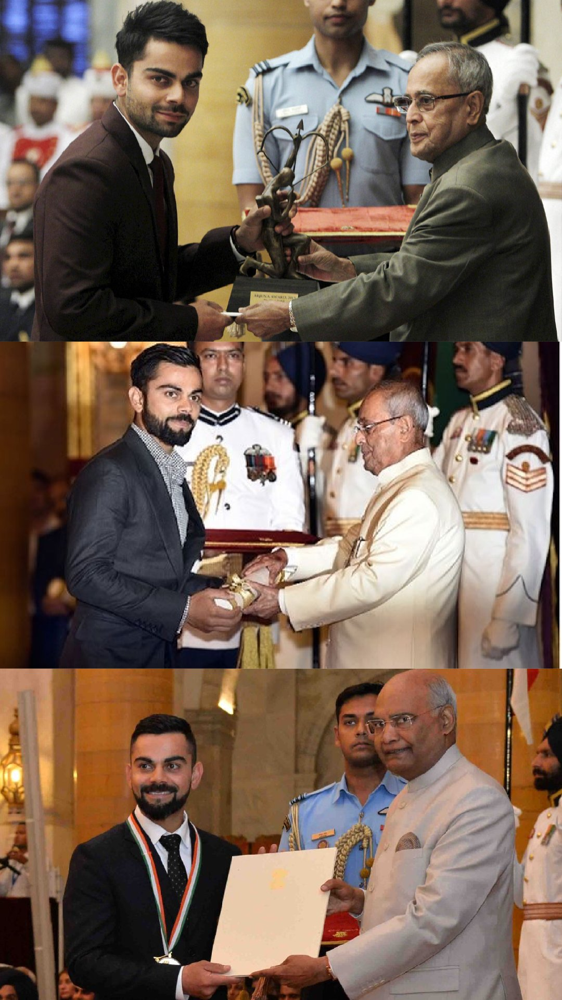

Virat Kohli
Home
International
Ipl
Honours
Contact
Virat Kohli
The Run Machine
T20 International
Records
Most runs in T20 internationals – 4,037 runs.
Most Fifty plus scores in the career – 38 (including 37 fifties and 1 century).
Highest career batting average in T20I – 52.73.
Fastest to - 3,000 runs (81 innings), 3,500 runs (96 innings)
Most player of the match (15 times) and player of the series awards (7 times).
One Day International
Records
Most ODI centuries ever (50)
Most ODI centuries while chasing (27).
Most ODI centuries in World
Fastest to - 8,000 runs (175 innings), 9,000 runs (194 innings), 10,000 runs (205 innings), 11,000 runs (222 innings), 12,000 runs (242 innings), 13,000 runs (267 innings)
Test
Records
Most Wins as captain of India, with 40 wins out of 68 matches.
Four Test double-hundreds in four consecutive series.
Indian Premier League
Records
Most runs in Indian Premier League – 7,444 runs.
Most runs in a single edition of IPL – 973 runs (2016).
Only player to be involved in three double-century plus stands, two times with AB de Villiers and once with Chris Gayle.
Most runs against Delhi Capitals (1030)
Most hundreds in a season (4) and in the league (7).
Total no. of six 241 and four 658.

Honours
National honours
2013 – Arjuna Award, second highest sporting honour.
2017 – Padma Shri, India's fourth highest civilian award.
2018 – Major Dhyan Chand Khel Ratna Award, India's highest sporting honour.
Sporting honours
Sir Garfield Sobers Trophy (ICC Men's Cricketer of the Decade): 2011–2020.
Sir Garfield Sobers Trophy (ICC Cricketer of the Year): 2017, 2018.
ICC Men's ODI Cricketer of the Decade: 2011–2020
ICC ODI Player of the Year: 2012,[163] 2017, 2018, 2023.
ICC Test Player of the Year: 2018.
ICC ODI Team of the Year: 2012, 2014, 2016 (captain), 2017 (captain), 2018 (captain), 2019 (captain), 2023
ICC Test Team of the Year: 2017 (captain), 2018 (captain), 2019 (captain).
ICC Men's T20I Team of the Year: 2022.
ICC Spirit of Cricket: 2019.
ICC Men's Test Team of the Decade: 2011–2020 (captain).
ICC Men's ODI Team of the Decade: 2011–2020.
ICC Men's T20I Team of the Decade: 2011–2020.
Polly Umrigar Award for International Cricketer of the Year: 2011–12, 2014–15, 2015–16, 2016–17, 2017–18.
ICC Men's Player of the Month: October 2022
Wisden Leading Cricketer in the World: 2016, 2017, 2018.
CEAT International Cricketer of the Year: 2011–12, 2013–14, 2017– 18, 2018–19.
Indian Premier League Orange Cap for most runs: 2016.
Barmy Army – International Player of Year: 2017, 2018.
ESPNcricinfo – ODI Batting Performance of the Year: 2012.
Other honours and awards
People's Choice Awards India for Favourite Sportsperson: 2012
GQ Sportsman of the year: 2013.
CNN-News18 Indian of the Year: 2017
People for the Ethical Treatment of Animals (PETA) India's Person of the Year: 2019.
Delhi & District Cricket Association (DDCA) renamed a stand after Kohli at Feroz Shah Kotla, Delhi.
Follow on
copyright © Chandan. made with
by Chandan kumar